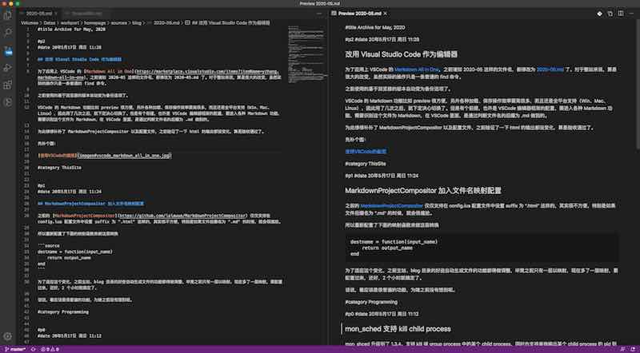

之前 m_net 在 Windows 下是使用 select 作为 socket 事件检测接口，效率差是一方面，主要是其他更主要的服务端平台，比如 Linux/FreeBSD，以及开发常用的 MacOS，是另外一套相近的 API。
比如不管是 epoll 或者 kqueue，通过接口，可以返回一个当前时间片段内有事件发生的 socket 列表，以及 socket 对应的 ptr，用来绑定这个 socket 对应的内部结构。添加、删除 socket 事件列表的方法也相近。
然而 Windows 这边，因为用了线性的 select，内部数据结构映射方面，每次监听前，都得添加事件响应参数，又得单独处理，麻烦了很多。
后面介绍的这个 wepoll，是在 Windows 下实现了 epoll 的接口，对那些志在跨平台的网络库来说，简单点只需要面对 epoll、kqueue 的区别就好了，而这两者很相近啊。
所以稍微修改了一下，m_net 就支持上了，另外还修复了一个大 bug，epoll_wait 接口的参数是 milliseconds 的，而 kqueue 的接口参数是 microseconds 的，fix 了一下。
然后跑了 test_reconnect、test_rwdata、test_timer 几个端对端的测试程序，完美应用。当然回头又跑了一遍 Linux、FreeBSD、MacOS 的下的端对端测试。
话说 wepoll 在 Windows 下使用的也是 IOCP 对应的接口，不过没有使用到多线程，而是使用了 SetFileCompletionNotificationModes 函数取消端口操作完成后的异步通知，然后使用 NtDeviceIoControlFile 来获取端口的完成状态，这样就将异步事件转成同步的了。
另外一个部分，是将 epoll 相关接口的数据结构映射到 Windows 相关数据结构里面，大概就是这样。
很想说 NtDeviceIoControlFile 在 bing 上面都搜不到什么中文信息，蛋疼。
为了应用上 VSCode 的 Markdown All in One，之前诸如 2020-05 这样的文件名，都修改为 2020-05.md 了。对于整站来说，算是很大的改变，虽然实际的操作只是一条普通的 find 命令。
之前使用的基于浏览器的版本自动变为备份选项了。
VSCode 的 Markdown 功能比如 preview 很方便，另外各种加载、保存操作效率要高很多，而且还是全平台支持（Win、Mac、Linux），因此用了几次之后，就下定决心切换了。但是有个前提，也许是 VSCode 编辑器框架的配置，要进入各种 Markdown 功能，需要识别这个文件为 Markdown，在 VSCode 里面，是通过判断文件名的后缀为 .md 做到的。
为此修修补补了 MarkdownProjectCompositor 以及配置文件，之前验证了一下 html 的输出都没变化，算是验收通过了。
先补个图：

之前的 MarkdownProjectCompositor 仅仅支持在 config.lua 配置文件中设置 suffix 为 ".html" 这样的，其实很不方便，特别是如果文件后缀名为 ".md" 的时候，就会很尴尬。
所以重新配置了下面的映射函数来做这层转换
destname = function(input_name)
return output_name
end
为了适应这个变化，之前主站、blog 目录的好些自动生成文件的功能都得做调整，毕竟之前只有一层以映射，现在多了一层映射，要配置过来，还好，2 个小时就搞定了。
话说，着应该是很普遍的功能，为啥之前没有想到呢。
mon_shced 升级到了 1.3.4，支持 kill 掉 group process 中的某个 child process，同时也支持单独输出某个 child process 的 pid 到指定目录下。
先列一下功能：
Usage:
mon_sched -h show help
mon_sched -v show version
mon_sched -r sched_json run group process from config
mon_sched -s pid_json show group and child status
mon_sched -k pid_json [child_name] kill [group | child] process
第二个功能先不表，也不知道为啥头脑发热做了第二个功能，说一下第一个功能吧。
之前 mon_sched 只支持 supervision，后来加了 -k 选项，可以关闭管理的整个 process group，这里只是方便了一点，不用自己再使用 kill 指令安排了。主要的应用场景，是为了在远程控制时，将固定的配置文件名，作为 mon_sched 的参数，让整个 process group 下线。
加入第一个功能 kill child process 后，结合本来每个 child process 可以配置其 restart 脚本内容这个功能，可以做到让服务更新，之后再重启。由于 mon_sched 没有什么依赖，因此这样的重启可以做到 child process 二进制依赖的切割。
我自测的结果，即便 mon_sched 在当前目录运行配置文件，restart 脚本删除并重新建立这个目录，mon_sched 重新拉起服务的过程中，仍能定位到这个目录，前提当然是目录名称未变。感觉，在文件系统当前目录这一层，也是没有变化的。
有了这样的加持，方便多了。